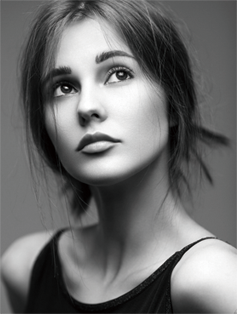
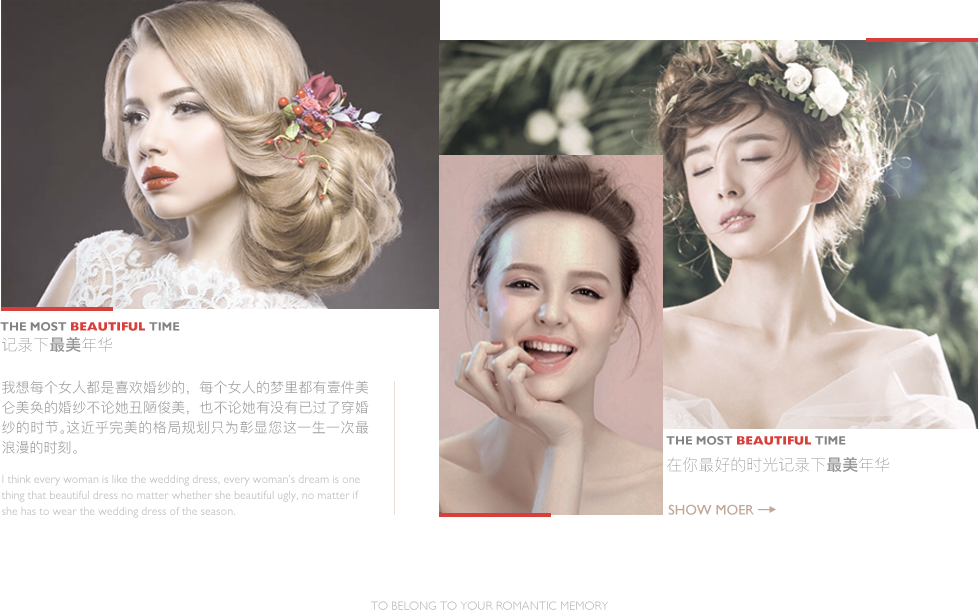

张悦（ZACK ZHANG），国内顶尖时尚摄影师，1980年出生于北京。他的摄影作品有着令人过目难忘的华丽质感与灵动生气，他对色彩与光线的调配能力更是让人惊叹。他以摩登的独特视角与语言，跨越时装,影像等时尚文化领域的平面创作，受到多种国际品牌杂志的青睐。其创意和理念被海外众多的一线杂志与国际顶级品牌认同并与其达成共识。张悦（ZACK ZHANG），国内顶尖时尚摄影师，1980年出生于北京。他的摄影作品有着令人过目难忘的华丽质感与灵动生气，他对色彩与光线的调配能力更是让人惊叹。他以摩登的独特视角与语言，跨越时装,影像等时尚文化领域的平面创作，受到多种国际品牌杂志的青睐。其创意和理念被海外众多的一线杂志与国际顶级品牌认同并与其达成共识。
张悦（ZACK ZHANG），国内顶尖时尚摄影师，1980年出生于北京。他的摄影作品有着令人过目难忘的华丽质感与灵动生气，他对色彩与光线的调配能力更是让人惊叹。他以摩登的独特视角与语言，跨越时装,影像等时尚文化领域的平面创作，受到多种国际品牌杂志的青睐。其创意和理念被海外众多的一线杂志与国际顶级品牌认同并与其达成共识。张悦（ZACK ZHANG），国内顶尖时尚摄影师，1980年出生于北京。他的摄影作品有着令人过目难忘的华丽质感与灵动生气，他对色彩与光线的调配能力更是让人惊叹。他以摩登的独特视角与语言，跨越时装,影像等时尚文化领域的平面创作，受到多种国际品牌杂志的青睐。其创意和理念被海外众多的一线杂志与国际顶级品牌认同并与其达成共识。

Stephen Curry (Stephen Curry), was born on March 14, 1988, in Akron, Ohio (Akron, Ohio), American professional basketball player, the secretary point guard, playing for the NBA golden state warriors.
Stephen curry through to enter the NBA draft in 2009 has been played for the warriors, rookie season in the best rookie first team, in 2014, 2015 in west all-star line-up, 2014-15 elected MVP season, the first squad named best team, and help the warriors won the NBA championship.
Stephen curry with team USA won the world championship in Turkey in 2010, with the USA basketball World Cup in Spain in 2014.